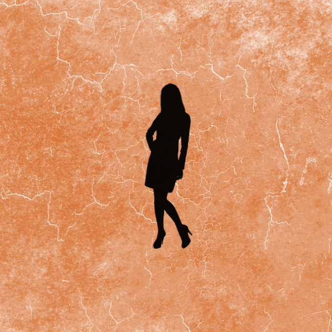
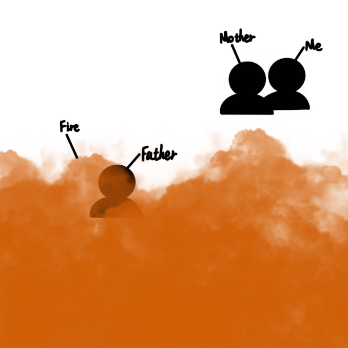

Your mind is yours again.
Alias: Vivi_07
Gender: Female
Age: 24
Membership Status: Active
Last Declaration: “No one owns my silence. No one edits my sorrow.”


This isn’t just a record of time. It’s a record of my refusal to be silent, to forget.
Researchers finally learned how to decode brain signals with more clarity. That year, DreamSync was launched. It was a small headset worn during sleep that recorded brain activity and uploaded it to the cloud. Using deep learning, doctors began turning dreams into visuals to help patients with trauma. Many people felt truly understood for the first time. I was seven. My mother signed the DreamSync agreement, believing it could help me forget the fire. My father had died in it. I had survived. At first, I hoped it might help. But every night, I still dreamed of him. And what scared me more than the dreams themselves was the thought that someone else could see them. After each session, the report said: “Abnormal sadness fluctuations. Recommended for clearance.” That’s when I understood. DreamSync wasn’t trying to help me heal. It wanted to erase what I felt.
DreamSync had become a part of everyday life. People used it to improve sleep, balance emotions, and manage relationships. Reports suggested music, gave emotional tips, or warned about risk patterns. Public dream terminals appeared. In some cities, dream scans were added to security checks and job screenings. Dreams had become part of who you were. That year, I was applying to university. My dream report gave me a C- compatibility score. In my dreams, I was always running—sometimes from fire, sometimes from nothing. The system flagged this as a potential antisocial signal. I lost my scholarship. I was added to the psychological monitoring list. After that, I started “planning” my dreams. No more chaos. No more emotion. Just quiet, safe, empty dreams. But they didn’t feel like mine anymore.
People began pushing back. Cities launched Dream Commons, where users could vote on how their dream data was used or deleted. At the same time, DreamSync adapted to local cultures. They brought in dream mediators—people from different backgrounds—to help interpret dreams more fairly. People with unique brain patterns also helped train the system, making it less biased. That year, I joined Dream Commons. I submitted a request to seal a memory—the dream where my father was lost in fire. But the system rejected it. The response said: “This segment has potential historical value and has been uploaded to Emotion Database 7.” They said it was democratic. But in the end, an algorithm still chose what I was allowed to forget. Meanwhile, the Dream Festival had changed. It used to be a protest. Now it was a global event. People shared dream-based music, images, and art. That year, I was asked to present something called the Trauma Healing Dream Map. I didn’t want to. But the organizers said: “It’s an honor to contribute your healing power to the world.” On stage, they turned the sound of my crying into music. The audience clapped. The lights were bright. In that moment, I felt cold. Because I realized: My dream was no longer mine. It had become their content.
Dream data had become extremely valuable. Governments used it to predict unrest. Companies used it to sell fear-based ads. Dreams lost all privacy. Emotions were broken apart—fear, guilt, hope—and sold like products. Soon, people couldn’t tell if their feelings were their own, or shaped by the system. One day, I passed an ad screen. Suddenly, I heard a voice: “Run. Now.” It was my mother’s voice—from one of my dreams. It was now part of a home safety simulation ad. I reported it. The reply came fast: “This audio clip has obtained behavioral wave authorization.” That was when I finally saw the truth: DreamSync didn’t just record dreams, it sold emotions.
DreamSync added a new feature. It started labeling dreams as “normal” or “distorted.” If your dreams were too emotional or unusual, you were flagged for correction. People with trauma or depression were often marked unstable. Many lost jobs, healthcare, or basic access. Foucault once said: “Power hides in how truth is defined.” Now, machines were defining emotional truth. I had one dream for years. A door that would never open. They called it an “emotional stagnation type.” I got a message: “Dream behavior intervention required.” I refused. The next day, I lost my insurance. My dream account was locked. My job application was paused. That night, I cried. Not from the dream—but because I knew: They could now define who I was.
More people began to disconnect. They called themselves Free Dreamers. They built secret networks. They encrypted their dreams. No more uploads. No more tracking. Soon, they partnered with Dream Commons. One group fought for privacy. The other for fair use. Together, they created the Dream Rights Agreement, a guide to stop misuse of dreams. Before every Dream Festival, they sent a message: “Real dreams cannot be sold or defined.” That year, I joined the Free Dreamers. During a disconnection mission, I pushed a needle into my neck. That night, I dreamed of my father. He hugged me. Together, we released the Dream Rights Declaration. Every dream was now anonymous. Nothing was uploaded. And on Dream Festival night, we shared nothing. No music. No visuals. No content. Just one quiet sentence on a black screen: “Dreams are not commodities; they are humanity’s last freedom.”
Press Enter to return to top